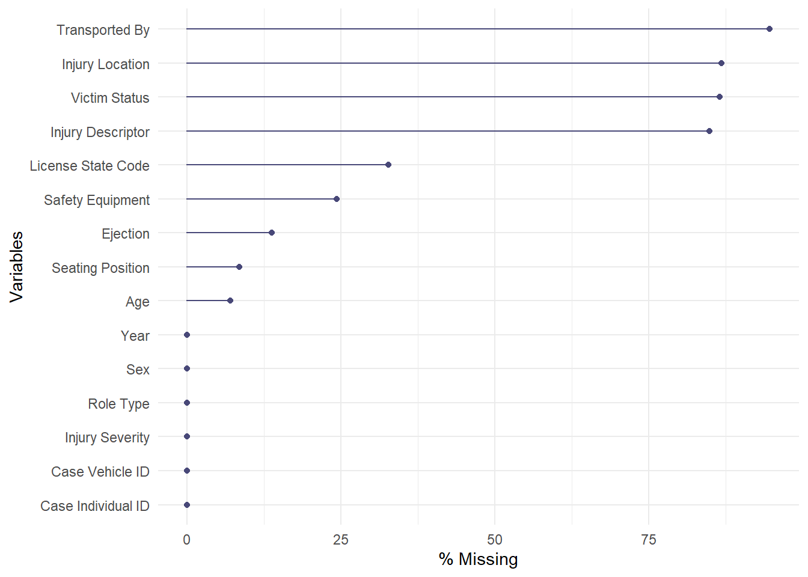

Chapter 4 Missing values
Since we have three datasets and they do not have a common key attribute for us to merge them together, we decided to visualize the missing values in three seperate graphs.
4.1 Aspect of Accident Vehicles
In this dataset, “Type/Axles of Truck or Bus” has all missing values in the column. “Event Type” and “Contributing Factor 1&2 Descriptions” also have many missing values. The other variables contain far less missing values.
4.2 Aspect of Accident Cases
In this dataset, We had 18 variables in total and we dropped 2 of them. The majority of “DOT.Reference.Marker.Location” are missing values and the “Pedestrian.Bicyclist.Action” contains a lot of “Not Applicable” values which cannot offer the information we want.
After transformation and cleaning of the dataset, we got the final data for visualization use.
4.3 Aspect of Individuals in Accidents

In this dataset, we have 15 variables in total. “Transported_by”, “Injury Location”, “Victim Status” and “Injury Description” have high percent of missing data within the variable.